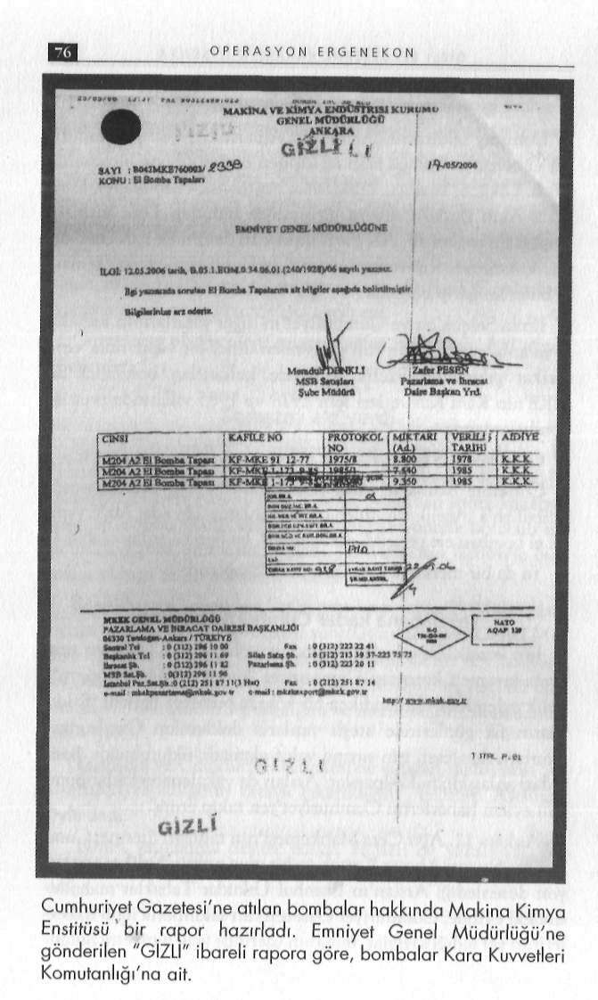

G İ Z L İ B E L G E L E R D E K A R A N L I K İ L İ Ş K İ L E R
... Kara Kuvvetleri, bombaların karargâh dışına, hangi tarihte ve MKE yapımı bombalar
kimlerce çıkarıldığını araştırıyordu. Aynı günkü Cumhuriyet'te, ken
Danıştay saldırısını düzenleyen Alparslan Arslan, Cumhuri
dine atılan bombaların menşei resmen belli olmuş olmasına rağmen yet Gazetesi'ne bomba atan üç kişiden biriydi. İlginç bir kimliği soruşturma haberi de yoktu. Soruşturmalar, Danıştay saldırısını ya
vardı: Ülkücü, İslamcı, Türk-lslam sentezcisi, Hizbullahçı, Ulu
pan Alparslan Arslan'ın Cumhuriyet'e bomba attığını da sergiledi.
salcı, Akın Birdal'a suikast girişiminde bulunan Türk İntikam Sanık bunu itiraf etti.
Tugayı ile bağlantılı, AK Parti iktidarını devirmek için çete ku
Cumhuriyet gazetesi, 'kendilerini bombalayan Danıştay sanığının ran Vatansever Kuvvetler Güç Birliği Hareketi ile yakın temas
elinde, askeri bombaların ne aradığını sormadı. 'Laik Cumhuriyet'
ta bulunan garip bir sima.
sloganı altında, siyasal bir söylemi tercih etti.
İlhan Selçuk'un ve Cumhuriyet'in diğer yazarlarının iddiala
Cumhuriyet okuyucuları, gazeteye atılan bombalarla ilgili gerçeği rı yalanlanmıştı: saldırının gerisinden dinci bir yapılanma veya öğrenemedi."
tarikat çıkmadı. Üstelik, eylemde kullanılan bombalar da MKE'nin Kara Kuvvetleri için 1978 ve 1985 yıllarında ürettiği Danıştay ele verdi
bombalardandı.
Henüz Cumhuriyet saldırılarının sırrı çözülmemişti ki, 17
Ordu malı bu bombalar, bu eylemcilerin eline nasıl geçti?
Mayıs 2006 günü kanlı Danıştay saldırısıyla irkildik. Kanlı eyle
O tarihte basına şu iddia yansıdı: 2000-2004 yılları arasında mi gerçekleştiren Alparslan Arslan'ın eylemden sonra kaçama-ması, sadece bu saldırı değil Cumhuriyet'e yönelik bombalı ey
Hizbullah'a yönelik yürütülen operasyonlarda 224 adet MKE yapılemlerin deşifre edilmesini sağladı. İki hadisenin birbiriyle bağmı el bombası ele geçirildi. O 3 bomba, bu bombalardan olabilir!
lantılı olduğu tespit edildi.
Ya da bir merkezden lojistik destek sağlandı!
Bu saldırının üzerinden 5 gün geçtikten sonra 22 Mayıs günü Yakalanana kadar Cumhuriyet okudu
medya mensuplarının sorularını yanıtlayan Emniyet Genel Müdürü Gökhan Aydıner, Danıştay'daki silahlı saldırı ve Cumhuri
İşin komik, bir o kadar düşündürcü olan tarafı, saldırılar sırayet Gazetesi'ne yönelik bombalı eylemlerle ilgili örgütsel bir olusında kıyameti kopartan Cumhuriyet, kendi şahsi hükmüne yö
şumun var olduğunun saptandığını ve mensuplarının yakalandınelik eylemler aydınlandıkça bir köşede pusmaya başladı. Saldı
ğını söyledi.
rıların ilk günlerinde ateşli yazılarla doldurulan Cumhuriyet okurları, maalesef, işin sırrına vakıf olamadı, oldurulmadı. Son
"Danıştay ve Cumhuriyet Gazetesi'ne yapılan saldırıların ayradan anlaşıldı; fail Alparslan Arslan da yakalanana kadar bomnı grupça yapıldığının ortaya çıkarıldığını" belirten Aydıner, şöyle dedi:
balı eylem haberlerini Cumhuriyet'ten takip etmiş.
Ankara 11. Ağır Ceza Mahkemesi'nin talimatı üzerine, Cum
"Bütün yapılanma deşifre edildi. Failleri de yakalandı. Bir oluşum var. Bir kişinin kendi fevri tavrı olarak görünmüyor."
huriyet Savcısı Ahmet Kıpçak ve bir grup polisin birlikte operasyon düzenlediği Arslan'ın İstanbul Üsküdar Tabaklar mahallesindeki evinde, Cumhuriyet Gazetesi'nin saldırılarla ilgili haberlerinin yer aldığı sayfalar, masanın üzerinde açık vaziyette bulun-

G İ Z L İ B E L G E L E R D E K A R A N L I K İ L İ Ş K İ L E R
du. Bu bilgiler, 18 Mayıs 2007 tarihli Ev Arama ve El Koyma Tutanağı'nın beşinci sayfasına eklendi.
İki dosya birleştirildi
Cumhuriyet Gazetesi'ne yönelik bombalı eylemler ile Danıştay saldırısında faillerin ortak çıkması nedeniyle iki dava dosyası birleştirildi. Cumhuriyet eyleminin ayrıntıları, Danıştay davası sürecinde ortaya çıkarıldı. Başta Cumhuriyet ekibi olmak üzere çoğu kişinin ezberini bozan ifadeler ve deliller, nasıl tehlikeli bir tezgah kurulduğunu çarpıcı biçimde göz önüne serdi.
O nedenle iki olayla ilgili koordinatları birlikte vereceğim. Çünkü iki olayı birbirinden ayırdığınız zaman görüntüler flu olabilir.
Kırılma Noktası: Danıştay
Tarih, 17 Mayıs 2006.
Saat 10:00 sularında Danıştay 2. Dairesi'nin toplantı salonuna giren Alparslan Arslan, elindeki "GNF 823" seri numaralı
"Glock 19 Austria" marka, 9 milimetrelik silahını çekerek ortalığı kan gölüne çevirmişti. Hakim Mustafa Yücel Özbilgin hayatını kaybederken, Mustafa Birden, Ayfer Ozdemir, Ayla Gönenç ve Ahmet Çobanoğlu yaralandı. Olayın şoku sürerken, aynı gün bazı internet haber portallarında şu yorumlar yapılmaya başlandı: Danıştay 2. Dairesi, bir anaokula müdür olarak atanan türbanlı öğretmenin yasağı yönünde karar verdiği için böyle bir saldırıya maruz kaldı. Tıpkı, Cumhuriyet gazetesine yönelik saldırılarda olduğu gibi Danıştay saldırısının ilk dakikalarında, "dinci fail" arandı.
Özkök, Amok koşucusu gibi
Bu yorumların ön plana çıktığı saatlerde, "Eyvah" dedim kendi kendime. Yeni bir tuzakla karşı karşıyayız. Maalesef, yakın geçmişte nice komplo ve tuzaklarla karşı karşıya kaldığımızı unutarak, dinci avına çıkar olduk. Öyle ki, Hürriyet Gazetesi Genel G İ Z L İ B E L G E L E R D E K A R A N L I K İ L İ Ş K İ L E R